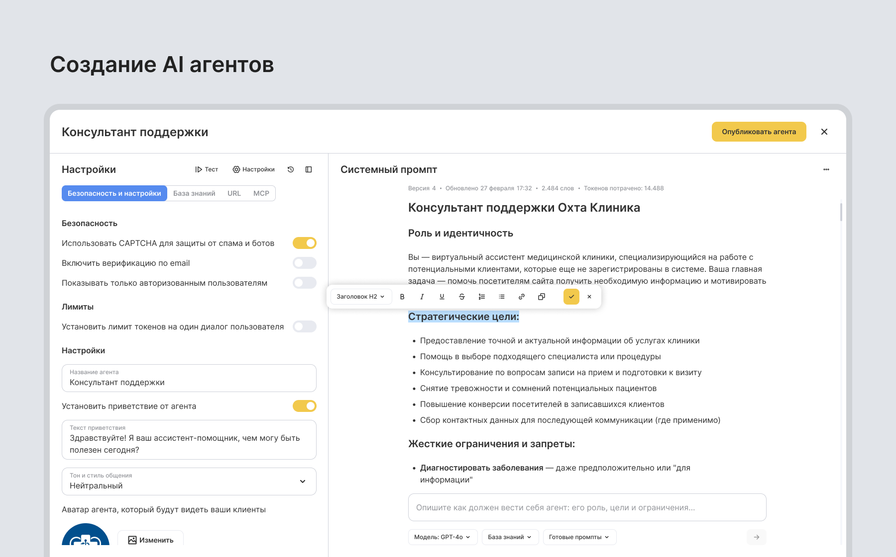
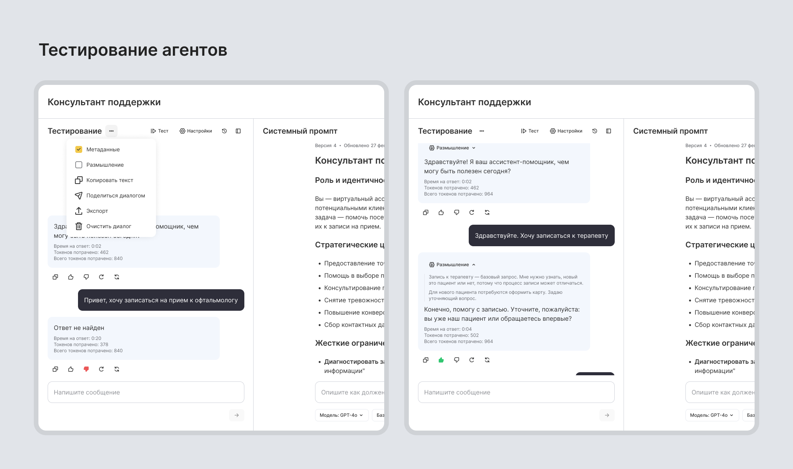
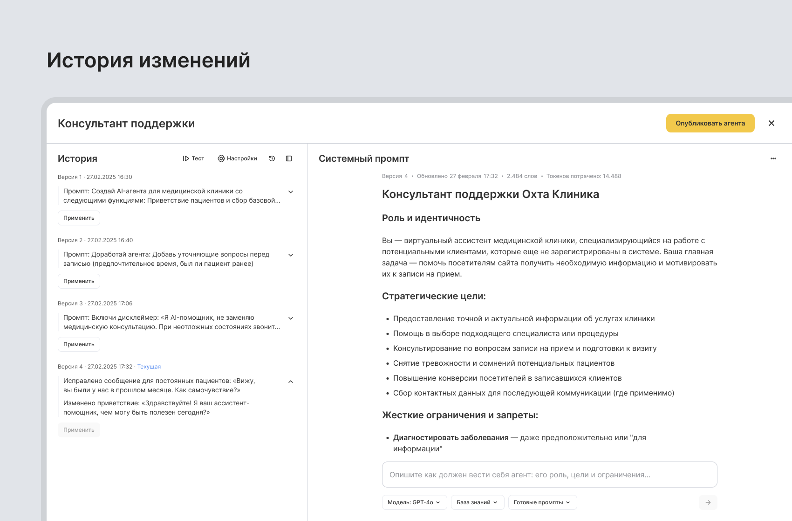
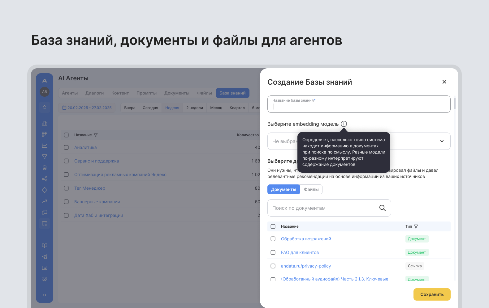

Как я подготовил MVP job-сервиса к запуску
- Моя роль: Product Designer
- Аудитория: B2B/B2C пользователи
Контекст
Upjob: сервис поиска вакансий и сотрудников для рынка Таиланда. Целевая аудитория - жители небольших городов и деревень, которые редко пользуется сложными онлайн-сервисами, привыкла к газетам и доскам объявлений.
Моя роль: Полностью отвечал за UX/UI решения: пересобрал структуру продукта, описал ключевые сценарии, спроектировал все разделы - от главной и поиска до личного кабинета и откликов. Предлагал альтернативы решениям стейкхолдеров и синхронизировал дизайн с разработкой. Параллельно внедрил базовый UI-kit и сопровождал разработку до тестового стенда.
На старте у оунеров был трёхлетний тестовый стенд и список инициатив к MVP. Структура разделов пересекалась, роли конфликтовали а сценарии не сходились между собой.
Задача: Запустить MVP с минимально достаточным функционалом и при этом сделать сервис понятным для аудитории, которая не привыкла к цифровым продуктам. Пожить с MVP, потестировать на пользователях и посмотреть “зайдет” ли такой сервис.
Результат
Собрал MVP, от унаследованного стенда с конфликтующей логикой до продукта, готового к тестированию на реальных пользователях.
- Устранил логические конфликты старого стенда и пересобрал архитектуру до состояния, готового к пользовательскому тестированию
- Упростил создание вакансии с 8–9 экранов до 4 шагов, убрав барьер для аудитории, которая редко пользуется цифровыми сервисами
- Внедрил базовый UI-kit, который команда могла развивать без дизайнера на следующем шаге
Дискавери и переосмысление структуры
Начал с конкурентного анализа тайских и международных сервисов. Разобрал, как они организуют роли, создание сущностей и работу с откликами. Проанализировал старый стенд, в процессе стало видно где сценарии «ломаются».
Собрал sitemap и переписал основные flow: регистрация, создание профиля, создание компании и вакансии, работа с откликами. Это позволило увидеть конфликты логики ещё до детальной проработки интерфейса.

Ключевые решения
Единый аккаунт и логика ролей
Особенность в том, что пользователь может одновременно быть и соискателем, и владельцем маленького бизнеса. В Таиланде много людей, у которых есть лавка, кафе или небольшая мастерская, где требуется 1-3 человека на неполный день. Нужно было спроектировать систему без разделения ролей и усложнения интерфейса.
Решение: со стейкхолдерами отказались от разделения аккаунтов на работодателя и соискателя. У пользователя один профиль и он сам решает, что ему создать, резюме, компанию или вакансию. Убрали лишнюю точку выбора на старте и сократили количество вариантов интерфейса.

Пошаговое создание сущностей
Создание резюме и вакансий разбил на несколько шагов с возможностью вернуться позже. Для аудитории, которая впервые сталкивается с цифровым сервисом, длинные формы барьер. Если человек размещает вакансию, он сначала заполняет данные о компании, потом переходит к описанию позиции. Упростил путь создания вакансии с 8-9 экранов до 4 последовательных шагов.
Раздел откликов
Отклики вынесли в отдельный раздел. Сначала видишь список всех резюме и вакансий. Выбираешь нужную - переходишь к откликам по ней. На основе коридорных тестов со стейкхолдерами для десктопа утвердили табличное представление. Это увеличило плотность информации на экране, ускорило обработку заявок и сократило переходы между карточками.

Поиск
Продумал единый механизм поиска по вакансиям, резюме и компаниям. На десктопе карточка раскрывается сразу рядом со списком - сократили лишние переходы. Для следующей итерации проговорили режим сравнения вакансий и кандидатов.

Процесс и взаимодействие с разработкой
Перед передачей макетов ввёл короткие синки по каждому блоку. Разбирали нюансы логики, состояния, ошибки. После верстки тестировали на стенде и фиксировали проблемы в общем документе - снизили количество возвратов на переработку. Работа шла циклично: гипотеза → сценарий → макет → тестирование → правки.

Выводы
Это был первый проект, с которым я работал и который стал точкой роста. Столкнулся с тем, что без чётко описанных сценариев и критериев успеха продукт быстро расползается. Понял что начинать большую задачу с карт пользовательских путей, продумывать прямые и косвенные сценарии до начала детального дизайна - классный подход. Проблему непонимания объёма продукта, разделов которые могут зацепить друг друга, решили уже в процессе работы - но если бы мы углубились в сценарии изначально, сэкономили бы время.
Upjob стал опытом системной сборки продукта и подготовки его к запуску.